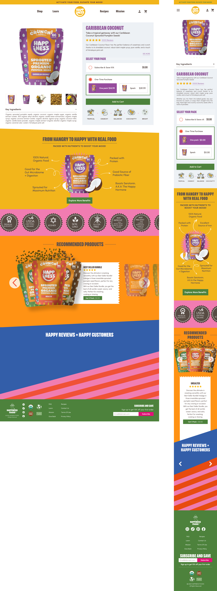
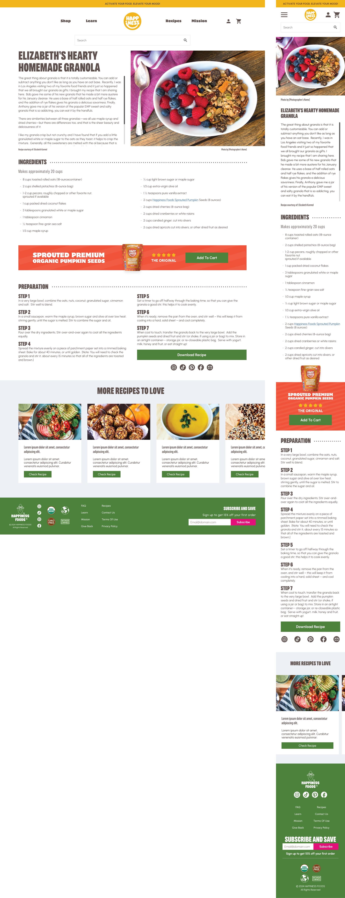
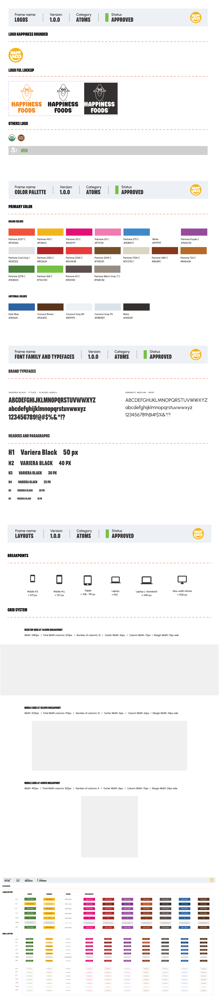

01 — My Role
UX/UI Designer — interface design and Design System
As UX/UI Designer, I was responsible for designing key sections of the website and creating the Design System that became the foundation of the entire product.
My responsibilities included
Designing responsive user interfaces · Building a scalable Design System in Figma · Defining reusable UI components and interaction patterns · Establishing typography, spacing, color, and layout foundations · Creating component variants and documentation for consistency · Collaborating to ensure design decisions aligned with both branding and development requirements

Website overview — full product experience
02 — Design Approach
Balancing storytelling with commerce
The interface balances storytelling with commerce. The visual language was intentionally crafted to communicate freshness, wellness, and premium quality while keeping the purchasing journey simple and intuitive.
Special attention was given to
Clear product hierarchy · Content readability · Responsive layouts · Component consistency · Scalable page structure · Accessibility and usability best practices

Product listing page — category grid and filters

Product detail page

Recipe page — content storytelling

Recipe landing page — editorial layout
03 — Design System
A system that could grow with the business
Rather than designing isolated pages, I focused on creating a system that could grow with the business. The Design System standardized every visual and functional element, allowing new pages, campaigns, and product launches to be developed faster while maintaining a consistent user experience.
The system included
Foundation tokens (colors, typography, spacing and grid) · Modular UI components · Buttons, forms, cards and navigation patterns · Responsive behavior · Component variants and reusable patterns · Design documentation for implementation
This approach reduced design inconsistencies and created a single source of truth for future iterations.

Design System — foundations and component library

Bag component — states and variants